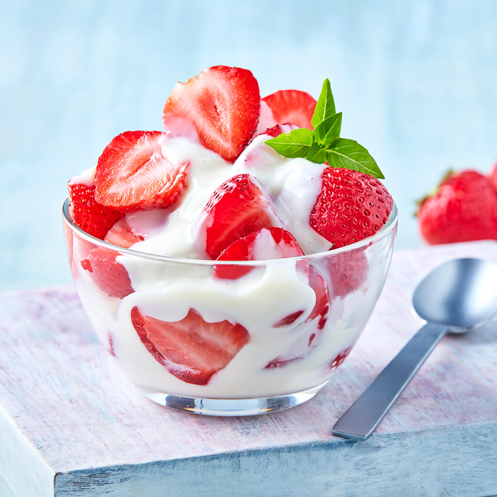

Ingredientes
- 500 g de fresas frescas
- 200 ml de crema para batir
- 100 ml de leche condensada
- 2 cucharadas de azúcar (opcional)
- Hojas de menta para decorar (opcional)
Preparación
- Lavar y cortar las fresas en mitades o cuartos según el tamaño.
- Batir la crema hasta que esté firme, agregando azúcar si deseas más dulzor.
- Incorporar la leche condensada a la crema batida y mezclar suavemente.
- En copas o vasos individuales, colocar una capa de fresas y cubrir con la crema.
- Repetir capas si lo deseas y terminar con crema en la parte superior.
- Decorar con hojas de menta y servir frío.
